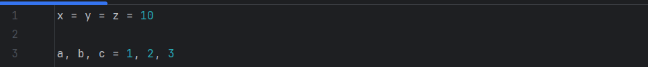

Variables
Las variables son un almacén donde guardar una información y que en cualquier momento podemos recuperarla para volver a utilizarla en otras partes del código.
Para declarar una variable hay que ponerle un nombre y asignarle un valor. El nombre de las variables deben cumplir ciertas reglas:
- No deben se palabras reservadas de Python.
- Deben comenzar por una letra.
- No pueden contener espacios, ni caracteres extraños.
- Python hace distinción entre mayúsculas y minúsculas.
Por ejemplo, puedes crear una una variable llamada temperatura de la siguiente manera:
Las variables pueden contener diferentes tipos de datos, como números, texto o valores de verdadero o falso. Es importante seguir ciertas reglas al asignar valores para que Python entienda correctamente el código.
- Si necesitas guardar un número, simplemente lo escribes. Para los números decimales, en Python se utiliza el punto para separar la parte entera de la decimal.
- Para guardar texto, como palabras o frases, escribimos el contenido entre comillas simples o dobles.
- En el caso de las variables booleanas solo pueden ser True (verdadero) o False (falso). Se usan para representar respuestas de sí o no, o estados como encendido y apagado.
Por ejemplo:

Podemos por ejemplo asignar el mismo valor a diferentes variables con el siguiente código. O también podemos asignar varios valores separados por coma.
